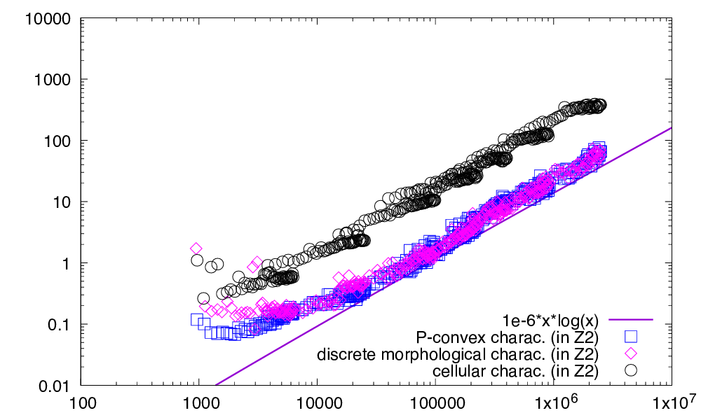
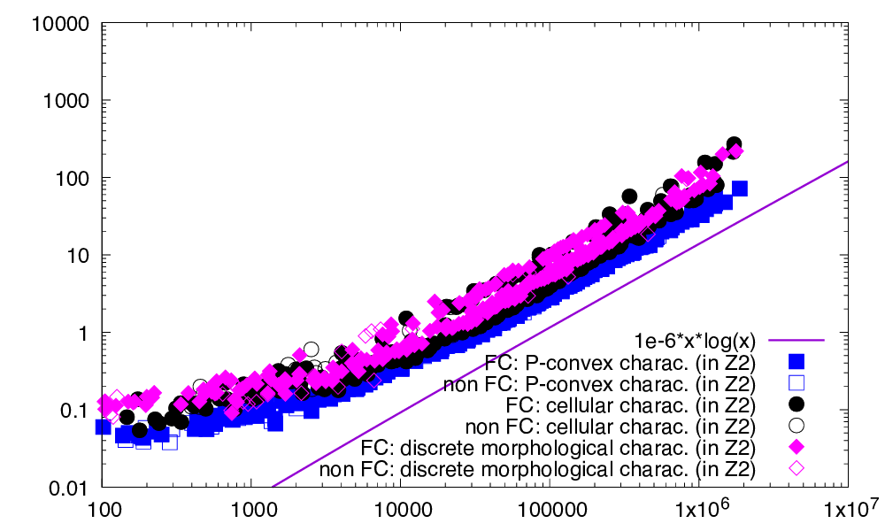
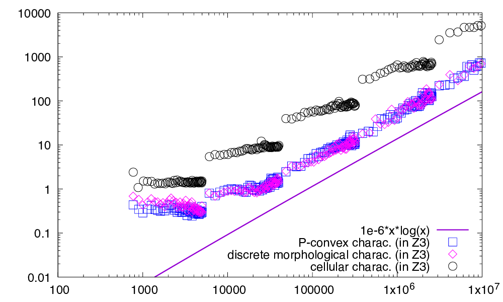
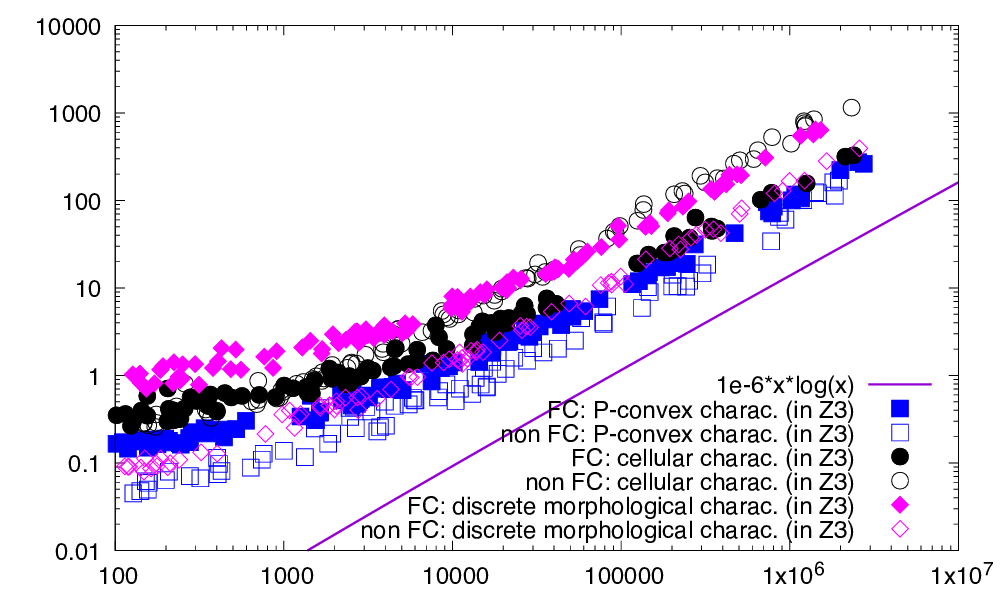
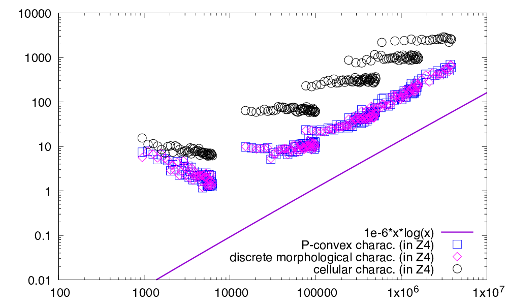
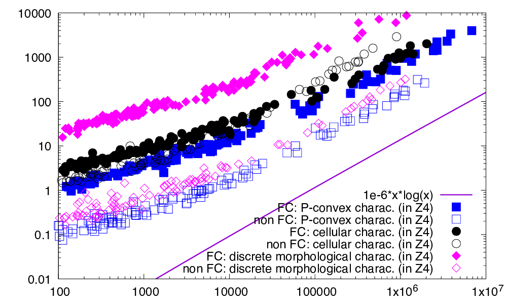

- Generated on for DGtal by
 1.14.0
1.14.0
|
DGtal 2.0.0
|
Part of the Geometry package.
This part of the manual describes tools associated to a new definition of digital convexity, called the full convexity [79] [80] . This new definition solves many problems related to the usual definition of digital convexity, like possible non connectedness or non simple connectedness, while encompassing its desirable features. Fully convex sets are digitally convex, but are also connected and simply connected. They have a morphological characterisation, which induces a simple convexity test algorithm. As an important example, arithmetic planes are fully convex too. Since DGtal release 1.5, P-convexity can also be checked in arbitrary dimension. It is worth to note that it is equivalent to full convexity, and is generally faster to check [55] .
The following programs are related to this documentation: geometry/curves/exampleDigitalConvexity.cpp, geometry/curves/exampleRationalConvexity.cpp, testBoundedLatticePolytope.cpp, testBoundedLatticePolytopeCounter.cpp, testCellGeometry.cpp, testDigitalConvexity.cpp, testEhrhartPolynomial.cpp, geometry/volumes/exampleBoundedLatticePolytopeCount2D.cpp, geometry/volumes/exampleBoundedLatticePolytopeCount3D.cpp, geometry/volumes/exampleBoundedLatticePolytopeCount4D.cpp, geometry/volumes/pConvexity-benchmark.cpp .
This module relies on module QuickHull algorithm in arbitrary dimension for convex hull and Delaunay cell complex computation for convex hull computations in arbitrary dimensions.
You may also look at Applications of full digital convexity to see some applications of full convexity.
See Fully convex envelope, relative fully convex envelope and digital polyhedra to see how to build fully convex hulls and digital polyhedra.
The usual definition for digital convexity is as follows. For some digital set \( S \subset \mathbb{Z}^d \), \( S \) is said to be digitally convex whenever \( \mathrm{Conv}(S) \cap \mathbb{Z}^d = S \). Otherwise said, the convex hull of all the digital points contains exactly these digital points and no other.
Although handy and easy to check, this definition lacks many properties related to (continuous) convexity in the Euclidean plane.
We extend this definition as follows (see [79] [80] ). Let \( C^d \) be the usual regular cubical complex induced by the lattice \( \mathbb{Z}^d \), and let \( C^d_k \) be its k-cells, for \( 0 \le k \le d \). We have that the 0-cells of \( C^d_0 \) are exactly the lattice points, the 1-cells of \( C^d_1 \) are the open unit segment joining 2 neighboring lattice points, etc.
Finally, for an arbitrary subset \( Y \subset \mathbb{R}^d \), we denote by \( C^d_k \lbrack Y \rbrack \) the set of k-cells of \(C^d \) whose closure have a non-empty intersection with \( Y \), i.e. \( C^d_k \lbrack Y \rbrack := \{ c \in C^d_k,~\text{s.t.}~ \bar{c} \cap Y \neq \emptyset \} \).
A digital set \( S \subset \mathbb{Z}^d \) is said to be digitally k- convex whenever \( C^d_k \lbrack \mathrm{Conv}(S) \rbrack = C^d_k \lbrack S \rbrack \). \( S \) is said to be fully (digitally) convex whenever it is digitally k- convex for \( 0 \le k \le d \).
A fully convex set is always \( 3^d-1 \)-connected (i.e. 8-connected in 2D, 26-connected in 3D). Furthermore its axis-aligned slices are connected (with the same kind of connectedness). It is also clear that digitally 0-convexity is the usual digital convexity.
A last useful notion is the subconvexity, or tangency. Let \( X \subset \mathbb{Z}^d \) some arbitrary digital set. Then the digital set \(S \subset \mathbb{Z}^d \) is said to be digitally k- subconvex to \( X \) whenever \( C^d_k \lbrack \mathrm{Conv}(S) \rbrack \subset C^d_k \lbrack X \rbrack \). And \( S \) is said to be fully (digitally) subconvex to \( X \) whenever it is digitally k- subconvex to \( X \) for \( 0 \le k \le d \).
Subconvexity is a useful for notion for digital contour and surface analysis. It tells which subsets of these digital sets are tangent to them.
The notion of P-convexity has been proposed in [55] . A set \( S \subset \mathbb{Z}^d \) is P-convex if and only if
P-convexity is equivalent to full convexity as shown in [55] .
Three classes help to check digital convexity.
Construction. You have different ways to build the lattice polytope:
other operations. You may also cut a polytope by a new halfspace (BoundedLatticePolytope::cut), count the number of lattice points inside, interior or on the boundary (BoundedLatticePolytope::count, BoundedLatticePolytope::countInterior, BoundedLatticePolytope::countBoundary) or enumerate them.
Last, you may compute Minkowski sums of a polytope with axis-aligned segments, squares or (hyper)-cubes (BoundedLatticePolytope::operator+=).
Point check services:
Standard polytope services:
Enumeration services:
Lattice point retrieval services:
The class ConvexityHelper also provides several static methods related to BoundedLatticePolytope:
The class CellGeometry can compute and store set of lattice cells of different dimensions. You specify at construction a Khalimsky space (any model of concepts::CCellularGridSpaceND), as well as the dimensions of the cells you are interested in. Internally it uses a variant of unordered set of points (see UnorderedSetByBlock) to store the lattice cells in a compact manner.
Then you may add cells that touch a range of points, or cells intersected by a polytope, or cells belonging to another CellGeometry object.
With respect to full digital convexity, CellGeometry::addCellsTouchingPolytope is very important since it allows to compute \( C^d_k \lbrack P \rbrack \) for an arbitrary polytope \( P \) and for any \( k \).
Class DigitalConvexity is a helper class to build polytopes from digital sets and to check digital k-convexity. It provides methods for checking if a simplex is full dimensional, building the corresponding polytope, methods for getting the lattice points in a polytope, computing the cells touching lattice points or touching a polytope, and a set of methods to check k-convexity or k-subconvexity (i.e. tangency).
Here are two ways for checking full convexity. The first is the simplest (but hides some details):
Second way to do it, where we see the intermediate computations of points and cells.
Morphological services (since 1.3):
The following snippet shows that a 4D ball is indeed fully convex.
Simplex services:
Polytope services:
Lattice cell geometry services:
Convexity services:
Any lattice polytope has a unique Ehrhart polynomial that encodes the relationship between the volume of the polytope and the number of integer points the polytope contains. It is a kind of extension of 2D Pick's theorem. More precisely, if \( P \) is a (bounded) polytope in \( \mathbb{R}^d \) with vertices lying in \( \mathbb{Z}^d \), and for any positive integer \( t \), let \( tP \) denotes the dilation of \( P \) by a factor \( t \).
We denote \( L(P,t) := \#( tP \cap \mathbb{Z}^d ) \), i.e. the number of lattice points included in the dilation of this polytope.
Then \( L(P,t) \) is a polynomial in \( t \) of degree \( f \). Its monomial coefficients \( L_k(P) \) are rational numbers, and some coefficients have a clear geometric meaning, e.g.:
Note also that, by Ehrhart-MacDonald reciprocity, the polynomial \((-1)^d L(P,-t) \) counts the number of interior lattice points to \(tP \).
Class EhrhartPolynomial provides an elementary method to determine the Ehrhart polynomial of any bounded lattice polytope.
See testEhrhartPolynomial.cpp for examples.
P-convexity is an equivalenr definition to full convexity, but with a recursive definition [55] . It provides thus a quite simple characterization of full convexity, which is implemented in class PConvexity.
Furthermore, the recursive definition of P-convexity induces a natural measure of full convexity for digital sets. Indeed the classical d-dimensional digital convexity measure of digital set A is
\[ M_d(A):=\frac{\#(A)}{\#(\mathrm{CvxH}(A) \cap \mathbf{Z}^d)}, \]
and \( M_d(\emptyset)=1 \).
The full convexity measure \( M_d^F \) for finite digital set A is
\[ M_1^F(A) := M_1(A), \quad M_d^F(A) := M_d(A) \Pi_{k=1}^d M_{d-1}^F( \pi_k(A) )\quad\text{for}\,\, d > 1. \]
It coincides with the digital convexity measure in dimension 1, but may differ starting from dimension 2, and is always less or equal to the convexity measure.
The figure below illustrates the links and the differences between the two convexity measures Md and MdF on simple 2D examples. As one can see, the usual convexity measure may not detect disconnectedness and it is sensitive to specific alignments of pixels. On the contrary, full convexity is globally more stable to perturbation and is never 1 when sets are disconnected.
There exists multiple equivalent characterizations of full convexity. Some of them induce algorithms for checking if a digital set is indeed fully convex, but the question `‘which is the fastest way’' remains. We recap here the different characterizations for \( X \subset \mathbb{Z}^d \) being full convex, which lead to an arbitrary dimensional algorithm for checking if a given range of n points X is indeed fully convex:
discrete morphological characterization [79] [80]
X is fully convex iff \( \forall \alpha \subset \{1, \ldots, d\}, U_\alpha(X) = \mathrm{CvxH}(U_\alpha(X)) \cap \mathbb{Z}^d \),
where \( U_\alpha \) is the discrete Minkowski sum defined as \( U_\emptyset(X):= X \), and for any subset of directions \( \alpha \in \{1,\ldots,d\} \) and a direction \( i \in \alpha \), \( U_\alpha(X) := U_{\alpha \setminus \{i\}}(X) \cup \mathbf{e}_i (U_{\alpha \setminus \{i\}}(X)) \) (the latter being the unit translation of the set along direction i).
This is implemented as DigitalConvexity::isFullyConvex .
cellular characterization [54] (Lemma 13)
X is fully convex iff \( X = \mathrm{Star}(\mathrm{Cvxh}(X)) \cap \mathbb{Z}^d \).
Furthermore, Theorem 5 of [54] tells that \( \mathrm{Star}(\mathrm{CvxH}(X)) \) is directly computable from \( \mathrm{CvxH}(U_{\{1,\ldots,d\}}(X)) \), so one convex hull computation is sufficient.
This is implemented as DigitalConvexity::isFullyConvexFast .
envelope idempotence [54] (Theorem 2)
X is fully convex iff \( X = FC(X) \), where \( FC(X):=\mathrm{Extr}( \mathrm{Skel}( \mathrm{Star}( \mathrm{CvxH}( X ) ) ) ) \).
This is implemented as DigitalConvexity::envelope, but its speed is not tested here, since it is similar to the previous one
P-convexity characterization [55]
X is fully convex iff \( X \) is 0-convex, and, if \( d > 1 \), the d projections of \( X \) along each axis is P-convex (in \( \mathbb{Z}^{d-1} \)).
This is implemented as PConvexity::isPConvex .
All three methods are tested for dimension 2, 3, and 4. In the first set of experiments (left of figures) we compare them on generic digital sets, which are randomly generated in a given range with a target density from \( 10\% \) to \( 90\% \). In the second set of experiments (right of figures), we limit our comparison to digital sets that are either digitally 0-convex or fully convex. We then distinguish the timings for checking full convexity depending on the output full convexity property of the input set, since it influences the computation time (typically increases it).
Figures below sum up the different computation times for dimension 2, 3, and 4.

|

|
| This figure displays the respective computation times (ms) in \( \mathbb{Z}^2 \) of P-convexity (as squares), discrete morphological characterization (as diamonds) and cellular characterization (as disks), as a function of the cardinal of the digital set. Left: digital sets are randomly generated in a given range with a target point density from \( 10\% \) to \( 90\% \). Right: digital sets are randomly generated so that they are either 0-convex or fully convex. | |

|

|
| This figure displays the respective computation times (ms) in \( \mathbb{Z}^3 \) of P-convexity (as squares), discrete morphological characterization (as diamonds) and cellular characterization (as disks), as a function of the cardinal of the digital set. Left: digital sets are randomly generated in a given range with a target point density from \( 10\% \) to \( 90\% \). Right: digital sets are randomly generated so that they are either 0-convex or fully convex. | |

|

|
| This figure displays the respective computation times (ms) in \( \mathbb{Z}^4 \) of P-convexity (as squares), discrete morphological characterization (as diamonds) and cellular characterization (as disks), as a function of the cardinal of the digital set. Left: digital sets are randomly generated in a given range with a target point density from \( 10\% \) to \( 90\% \). Right: digital sets are randomly generated so that they are either 0-convex or fully convex. | |
All approaches follow more or less a linearithmic or subquadratic complexity \( O(n \log n) \) (tests are limited to dimension lower or equal to 4). However, we can distinguish three cases:
You can also create bounded rational polytopes, i.e. polytopes with vertices with rational coordinates, with class BoundedRationalPolytope. You must give a common denominator for all rational coordinates.
Then the interface of BoundedRationalPolytope is almost the same as the one of BoundedLatticePolytope (see Lattice polytopes ).
The classs BoundedRationalPolytope offers dilatation by an arbitrary rational, e.g. as follows
You may also check digital convexity and compute cell covers with bounded rational polytopes, exactly in the same way as with BoundedLatticePolytope.
The class BoundedLatticePolytope is different from the class LatticePolytope2D for the following two reasons:
There are no simple conversion from one to the other. Class LatticePolytope2D is optimized for cuts and lattice points enumeration, and is very specific to 2D. Class BoundedLatticePolytope is less optimized than the previous one but works in nD and provides Minkowski sum and dilation services.